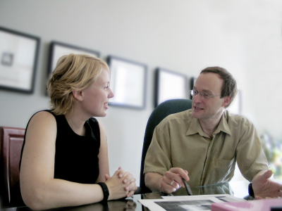

Only Read this Report if you Want to
Learn the Seven Secret ingredients to earning
$1,000 a day working 2 days a week
Imagine... making $30,000... $50,000... $70,000... even $150,000 per year or more in just a few hours per week by providing a service 1 in 6 Australians are so desperate for - they'll practically line up and BEG you to take their money!
+Plus, you'll be providing a good, honest, life-changing service over 3.5 million Australians need and want right now!

Would you be pleased if you walked into a room on Thursday with no experience... and on Sunday walked out with a step-by-step turn-key system to instantly and automatically earn $1,000 a day for the rest of your life?
And by learning a simple skill, getting everything you've ever wanted - holidays... cars... homes... time to do whatever you choose...
And I'm talking as soon as 30 days from now.
That's how long it takes to "create" what is without question the world's easiest, most profitable and instantly rewarding business. A business you can operate from the comfort of your own home in just a few hours per day.
All you need to do is follow the same system others have. I'll give you everything you require to get yourself out of the rat race and start enjoying the kind of lifestyle most people can only ever imagine.
 And you'll be on a better income than most doctors, chiropractors and other health professionals (who have studied for years)...You'll be earning anywhere from $250 - $500 per hour and have a lot more free time to do what you want.
And you'll be on a better income than most doctors, chiropractors and other health professionals (who have studied for years)...You'll be earning anywhere from $250 - $500 per hour and have a lot more free time to do what you want.
Impossible? Not when you consider the fact (according to the Sydney Morning Herald, January 23rd, 2005) that there's a crowd of over 3.5 million people in Australia who are starving for this particular service.
In fact, there are dozens of people making over $100,000 a year with this business right here in Australia. But that's nothing. If you're really serious, you can make in excess of $200,000 per annum - without even breaking a sweat. (Anyone can do this. You just have to have the desire for a better life and the ability to string a few sentences together).
Obviously, the money is exceptional. But the best thing about it all is you'll finally get your life back and because you'll be running your own business where...
- You can work from home (and do the hours you want, when you want... allowing you to get that all-too-elusive balanced life including time with your family, friends as well as a highly profitable business)
- You don't need employees and you don't need a retail store! You can run the entire business yourself, starting in your spare time!
- There's zero selling involved. You'll have access to our magnetic marketing system
And as I'm about to show you, you'll be creating something you can make as small or as large as you want. That's right. You can choose to create a lifestyle business... work a couple of days a week and make a nice and easy six-figure income. Or if you're the ambitious type, you could transform it into a thriving million-dollar enterprise with offices and colleagues in just a few short years from now. It's entirely up to you.
Secure Your Place NOW
QUIT PRACTITIONER CERTIFICATION SYDNEY
Date: 12th - 15th April 2012
Venue: Bayview Boulevard Hotel, Sydney
Price: Price on Application
OR CALL 1300 733 642
And it's all possible because you'll hold a 'magic key' to transforming people's live. Helping them to save thousands of dollars. Helping them protect their health and saving them from an early grave. What's more, within the next 90 days, you could walk into work one Monday morning and...
... and STOP getting paid peanuts to be worked to death.
STOP worrying about whether your job is going to be moved overseas for cheap labour
STOP worrying about getting laid off and cheated out of your retirement
What is this unique home-based business that allows you to maintain your existing job and put away an additional $25,000.00 - $50,000.00 a year in 2 - 6 hours a week? Or if you prefer, allows you to tell your boss to 'take his job and shove it' and enjoy a better income than you probably do right now?
- Without bothering friends, family or neighbours
- Without buying products or stocking inventory
- Without higher education &/or degrees
- Without disrupting your family life
- Without compromising your integrity
- Without gimmicks (not multi-level, network or internet marketing)
Before I tell you what it is, let me ask you something: how happy are you in your employment right now? Do you enjoy waking up to the ring of a deafening alarm clock? Aren't you sick and tired of battling through traffic just so you can stress yourself out for 8 hours making your boss rich? And does the thought of trading your time and sweat, the best part of your day, and your life - just to scrape together enough money to get by... make you depressed?
Until now, unless you were prepared to put hundreds of thousands of dollars on the line for a conventional business (and were more than happy to put up with the hassles of building, equipment, inventory and employees)... you didn't really have an option.
But this has all changed because I'm about to introduce you to a four day training that requires no previous experience which will give you the magical ability to...
‘It will enable me to create more peace in my life, with time to enjoy more of the important things in my life. It has taught me a lot of new tools and also re-opened tools that I have not been putting into practice on a constant part of my every day life. Be able to be present with like minded people and lovely energies and thank you to all the great presents and staff, it has been fun.’
Peter Wingard

‘I have learnt a systematic approach to assist me in my own learning and understanding to enable people to quit cigarettes for the rest of their life. The course has given me confidence and I feel enthusiastic about assisting clients to make healthier lifestyle choices, adding 14 years to their life and creating more wealth for themselves and their family.’
Satyaprem Gibson
‘I was kind of unsure about how this training would be given the cost. But I can see now that if I just do the actions and set up my business, it will take my life on to a new exciting course. And I really like helping people and be free to live my life as I choose, which is something I have always wanted, and I am pretty sure I can achieve both of these with this new knowledge and skill set. Thanks.’
Fiona J McKay
Stay with me for just a minute here. I know you're sceptical. Who wouldn't be with all the outrageous advertising claims you see on the television and newspapers these days? This is different. I know smoking can be a tough habit for people to kick, but what I have to tell you is god's honest truth. Here's proof...
This is just a small sample of the thousands of people who have given up smoking as a result of the system you are about to learn. Why is it so successful? Well, let's take a look at some statistics taken from the Surgeon General's Report:
- Gum is 10% successful - which means a 90% failure rate
- Patches are 14% successful - which means an 86% failure rate
- Will power is 7% successful - which means a 93% failure rate
- Traditional hypnosis is 40% successful - which means a 60% failure rate
Di Happ Testimonial
Here is what one of our happy QUIT clients has to say about our Quit Program.
Di has successfully stopped smoking cigerattes ever since her first session with her QUIT Specialist.
Not only that, she has not had the slightest urge to pickup a cigeratte since.
Research has shown the various strategies had worked with some of the people some of the time, however, there seemed to be no technique which worked with all of the people all of the time. Until the introduction of...
3.5 million Australians continue to be regular smokers (Sydney Morning Herald, January 23rd, 2005). That's more than 1 in 6 Australians.
- Retail figures compiled by market research company AC Nielsen reveal more than $3.5 billion of cigarettes were sold in supermarkets last financial year - a 7.1 percent increase on the previous year - while the total number of cigarettes sold jumped 2.7 percent to 10.392 billion cigarettes.
- Australian smokers statistically spend between $5,000 and $8,000 or more per year on cigarettes (and that's conservative, not taking into consideration the extra costs related to illness). If you doubt me, just take a look at these figures based on the average cost of a packet of cigarettes being $9 a pack (which costs you $12 before tax):

- A recent university study found the average life expectancy for non smokers is increased by an additional 13.2 years for females and 14.5 years extra for males
- 90% of lung cancer occurs in people who have smoked.
You can see why it's so easy to get clients. Not only will smokers add up to 14.5 years of healthy living to their life, they'll save a fortune in the process.
Think about it this way. How many people are there in your town? 5,000? 50,000? 500,000? 2 million? Whatever that number is, divide it by 6. That'll tell you approximately how many smokers live in your immediate proximity. So, if you have 5,000 in your town, over 800 are smokers. If you're in a larger city of 300,000 people, roughly 50,000 smokers will be desperate for your services.
That's a heck of a lot of potential customers. Just by working in your local area, you could easily earn yourself a nice and easy $30,000 to $150,000 a year income working part time ONLY 2 days a week...

It's So Simple Anyone Can Do It
No Special Skills Required
The great thing about this business is while you can earn an income equal to a doctor or a lawyer, you certainly don't need a degree or any form of formal education. You require very little start-up capital. In fact, if you own a telephone, you can run a successful 'Quit Cigarettes In 60 minutes' business.
You may be asking yourself, "But I know nothing about how to quit smoking." Relax. This system has been tested for years. It was originally developed in the United Kingdom, duplicated in the United States and now we've got a step-by-step system which has been proven to work right here in Australia.
I'll show you how to use this turnkey system to help any smoker quit for good. And believe me, you'll be adding so much value to the world, and have a growing group of raving fans who will not only pay you big bucks for your assistance, but refer you to their friends and family as well.
However to be perfectly honest, you will need something 'special' to get this business going. Want to know what that is?
The WILL to LISTEN intently and the DETERMINATION to TAKE ACTION and apply this unique step-by-step success formula
I'm afraid you're going to need this ability too - so if you don't have an open mind or enough 'fire in your belly' to make this business work, then stop reading now!
 After all, without these qualities, YOU WILL NOT SUCCEED in ANY business.
My wish if for you to succeed, get out of the rat race and live the life I know is possible for you by copying the exact plan I've laid out for you, but you can only do this if you're willing to follow the guidelines.
Still with me? Great!
The only reason this system would not work exactly the same way for you as it has for thousands of others around the world is if you didn't give it a go.
I hope you will agree that you owe it to yourself to put it to the test. Dozens in Australia have succeeded. And you can too because...
Huge Demand Awaits You
Despite the comprehensive QUIT-smoking advertising campaigns paid for by the government over recent years. And despite the changes in the legislation restricting smoker's enjoyment at bars, clubs, restaurants and most public places... latest research shows that one in 6 Australians continue to smoke and 67% of them want to quit cigarettes.
That's why "selling" people on the "Quit Cigarettes In 60 Minutes" service is a piece of cake. The 67% who seriously desire to quit smoking don't require any convincing at all!
So once the word gets around about what you're doing, people all over the place will be hunting you down to help them. In fact, it's not uncommon for someone to hear about you from a friend of a friend who had struggled to quit but finally achieved results through you.
Secure Your Place NOW
QUIT PRACTITIONER CERTIFICATION SYDNEY
Date: 12th - 15th April 2012
Venue: Bayview Boulevard Hotel, Sydney
Price: Price on Application
OR CALL 1300 733 642
Making Money With This Business May Be The Easiest Thing You Ever Do
Here's why: In the past, before I founded this opportunity, I looked into a lot of different businesses. I wanted to investigate what was available for people who wanted to get out of the rat race, be their own boss and work from home or a nearby office. And I found that most business opportunities were far less profitable than they should be because they fall into any (or sometimes all) of the following categories:
- Don't have a hungry market
- Have low margins
- Have terrible marketing
- Have high overheads
- Tie up all your cash-flow in stock
- Are high stress 'heart attack waiting to happen' type businesses which eats away at your soul
It's true. Most people going into business get so excited by the potential opportunity, they don't stop to think of the pitfalls. And that's why before I created the 'Quit Cigarettes in 60 Minutes' program I wrote down everything I thought anyone should have before committing to a business so they would maximise their chance of success. And here it is...
Your Perfect Business Checklist
- No Staff or expensive office space needed: Why would you want to pay thousands of dollars in overheads when you get started? All experienced business owners realise that high costs are a killer to any business. You don't need these headaches.
- Minimum start-up capital required: Most businesses cost in excess of $35,000.00. The problem is if you're looking for a way to make some money, you probably don't have that sort of cash lying around and easily accessible, right?
- Operate from home and set your own hours: You can do the hours you want, when you want... allowing you to get that all-too-elusive balanced life everyone is searching for: more time with your family & friends along with a highly profitable business.
- Complete 'turn-key' operation: The whole business needs to be proven with marketing systems in place so it almost runs on auto-pilot meaning you don't have to reinvent the wheel.
- It's 100% recession-proof: I make this claim because all smokers will save money as a result of this process. And if the economy turns pear shaped as it is now..., they'll be even more motivated to quit smoking. Remember the average smoker blows $5,000 -$8,000 a year which could go towards the mortgage, school fees etc...
- You don't need any special qualifications or marketing abilities: Actually, slick and pushy sales skills are a terrible thing to use in this business. Due to our magnetic marketing system, all the clients will come to you and you'll simply need to explain the way the whole process works.
- Low risk. This home business is exceptional! Why? Think about it... there are virtually no overheads, massive profit margins and you can build the business without spending a cent on advertising. All this adds up to one of the lowest risk businesses I have ever come across.
- It's legal, ethical and honest. You can sleep soundly at night knowing you're adding to the health, vitality and happiness of smokers and their families every single week by helping them become non smokers...You'll be responsible for changing lives and making a real difference.
- The profit can be embarrassingly high! After all, you won't have any of the hassles and expenses listed above. In fact I haven't seen any other business with as high a profit ratio than this one if you have please let me know.
Show me another business which provides all of these unique benefits. A business which like this...
‘I have always been looking to start a business which would not be stressful, ‘cause the job I’m presenting doing is quite stressful. I like the job and the money but not the stress. I’m a plant mechanic, working on high risk jobs and high, advanced technology machines. Thanks to my wife for sending me to the NLP, I took the step further to do the Quit Cigarettes and I’m loving it.’
Gordon McDonald
‘I now have more time to do other things that I’ve wanted to do, and by making more money in such a short time, I can give time to help others in certain foundations such as ‘Cancer Foundation.’ I am so grateful for meeting my friend at a time that I needed a new change and thank you to QC Seminars for changing my life to the NEW ME!!’
Valentina Maiorana
‘It has given me the tools to start a practice from scratch. All the material is first class and each step will be easy to put into practise. I know it will get me off the treadmill of the 9-5 job that I don’t really like and into something I’m quite passionate about. Thank you.’
Joanne Sanders
Sounds incredible doesn't it? In fact, here's...
7 Good Reasons Why It's Virtually Impossible To Fail

Having been involved in several businesses over the years, I have noticed that success in business is much like baking a cake. If you have the recipe and all the right ingredients, anyone can bake a cake. But if you try to bake a cake without a recipe, and without the faintest idea what ingredients are required to make a cake, you're almost guaranteed to end up with a mess on your hands. True?
It's the same with the 'Quit Cigarettes In 60 Minutes' program.
If you own the recipe for success, and use the right ingredients, success can be simple...
and incredibly profitable!
But where can you get your hands on that secret recipe?
It's like anything else. If you really want to learn how to master something, all you need to do is find someone who is already good at what you want to achieve. And then model their approach. (But whatever you do, don't take advice from well meaning friends and family who are not in the game. It's easy for people without experience to tell you what will and won't work, but keep in mind, they have zero proof of success.)
Dozens of people all over the country are now making $1,000 or more a day from following the recipe we've developed. So let's take a look at the seven secret ingredients that will virtually guarantee your success as a "Quit Cigarettes in 60 Minutes" Specialist:

You'll Get Comprehensive Training As A Specialist,
NOT A Generalist
Let me ask you a question: Which doctor gets paid more? The GP or the brain surgeon? It goes without saying that specialists always earn more money than generalists. Why?
Because of the law of supply and demand. Just like you can demand more money for your house when there are more buyers than there are sellers, you can demand more money for your services when you have:
- Almost zero competition
- Over 3.5 million prospects
In fact, that's why I chose this business. You see, before making this opportunity available, I was involved in the NLP and hypnosis industry. And while I loved the changes this technology made to the lives of those who attended the seminars, I was disappointed with the fact most people who attended these courses to earn a second income never seemed to get off the starting blocks.
Why?
For exactly the same reason many businesses fail. You can be the worlds best at what you do and still starve to death. YOU CAN DELIVER THE BEST PRODUCT OR SERVICE EVER AND STILL STRUGGLE AND SUFFER, unless you are...
Offering something people really want, and are motivated to pay for... with minimal competition
After all, what was the secret behind the microwave in the '70's, the VCR in the 80's, and the PC and internet in the 90's? A HUNGRY MARKET.
And that's why our training program uses advanced learning techniques over a four day period so you internalise the techniques and understand what really works.
By the completion of this four-day training program...
- You will be confident using all the strategies and concepts you learn to hold a one hour session with a client.
- You will have set yourself up for a six-figure income for life because you'll be able to perform the same sessions over and over and over again with your own clients for as long as you choose to be a "Quit Cigarettes in 60 Minutes" specialist. It's so easy once you know how to earn $1,000 or more a day working ONLY 2 days a week.
- You will be ready to open up your new practice, even if you have had no previous experience in the techniques and strategies. And no experience in your own business.
Here's a small taste of what you'll discover:
- Little known secrets to easily hypnotise every client at every single session... even if your client believes 'I can't be hypnotised'
- Why most hypnosis doesn't work to help people Quit smoking. And the best way to ensure every suggestion you make is approved by your client
- The three success secrets which practically guarantee your client will walk away a non-smoker. Ignoring these three secrets could leave you with a stack of unhappy clients
- How to ensure giving up smoking is a joyous experience for your client using little known yet highly effective NLP 'anchoring' processes
- What never to say during a session. Never. And why it will prevent the process from working
- A sneaky little mind trick that you won't learn anywhere else. And it practically guarantees your client drops to a level of hypnosis that makes change as easy as falling off a log
- If you're not sure what level of trance your client is in, here's something you can do to know instantly
- The simple-as-pie way to eradicate limiting beliefs about quitting that your client may have been holding onto for decades
- Why some clients will swear they were not hypnotised: tricks their mind plays on them - and how to quickly and easily eliminate their insistence
- Are you concerned the success might be temporary? Here's how to tap into deep core values to ensure the change lasts a lifetime
- PLUS... three often overlooked ways to tailor your sessions to the needs of each individual client... the single most important sentence you can ever use to transform your client... a little known strategy for overcoming minor 'therapy roadblocks' in an instant... and much, much, much more. (far too much to cover here)
- As you can see, the training is very thorough. And you will walk out of the 4 day seminar knowing every single thing you need to help someone stop smoking for good.... Save tens of thousands of dollars... and add 10 - 15 healthy years to their life. (Won't that give you a sense of satisfaction?)
- Now, that's only one piece of the puzzle, because you need to be able to find people to help. And that's why the next secret is so important...

You Get The Same Turn-Key Marketing System Others Are Using To Make $1,000 A Day
You can get the best training in the world, however if you don't realise that you are in the business of attracting customers then you're almost bound to fall flat on your face.
In fact, I'd go as far to say 90% of your success or failure in your business will correspond directly to your ability to attract new customers.
The idea that if you build a better mousetrap people will flock through your door is an outdated belief. In today's age, your success will have more to do with your ability to let people know about your superior mousetrap, product or service. The key to earning more and working less in any business is having marketing systems which work. And you will receive our revolutionary magnetic marketing system.
It doesn't matter if you're Walmart, McDonalds, IBM, the corner store or a "Quit Cigarettes In 60 Minutes" specialist. All successful businesses have one key point in common. They know that having a system for attracting new customers is critical to their success.
That's why we devote half the course simply to take you through our step-by-step magnetic marketing system so that you can not only be a great practitioner... but a busy and WEALTHY specialist.
And all by just working 2 Days a week earning $1,000 or more a day.
Having this system in your business will give you an unfair advantage over 90% of other business owners
Why? Because...
- You are in control of the amount of business you generate every week. By having effective systems for attracting new customers you'll never be at the mercy of the economy or a fickle word of mouth promotion like the majority of business owners are.
- There's no upper limit to the income you can make once you have effective, proven systems in your business. All you need to do is turn the key and use them over and over again to achieve the kind of income you desire.
- And if you're ambitious, you can put your entire operation on auto-pilot. Once you have a marketing system that works, you can hire other trained specialists to do the consulting so you can leverage your business and can be one of the fortunate few individuals with the ability to control what you do with your time.
You're going to get these tested systems handed to you on a platter. That's right. We've invested hundreds of thousands of dollars testing these systems to make sure anyone can use them to generate as many clients as you require. No stone has been left unturned you will know what works and what doesn't work including...
Heck, I've checked out some of the leading franchises, and many of them don't give you a marketing system which comes anything close to this. Don't waste your money on untested marketing. This system alone will save you tens of thousands of dollars in wasted marketing expenses.
Just look at what some of our other students have to say...
‘All aspects of sales and marketing I have learned in the past is covered and supplied in the training well past my expectations. This system is well thought through and all material delivered and supplied will make running my practice easy and systematic. I am totally empowered with the belief that my goals in life will be achieved.’
Glenn Coppin
‘I am inspired to become a better me – a fantastic QUIT specialist , friend, lifesaver, healer, light filled being, financially free and wealthy and having more fun on the holiday planet Earth! I am an immortal soul, a being of light, I am peace, power and love. Thanks QC Seminars for the opportunity to do QUIT.’
Heather Murphy
‘It really is a ‘Business in a Box.’ Coming from a non-business background, it has given me the confidence and skill set to start a brand new and successful business and I am very excited! A big thank you to George, Roberta, Dr Jamie and the QC staff and crew!’
Linette Hagen
Secure Your Place NOW
QUIT PRACTITIONER CERTIFICATION SYDNEY
Date: 12th - 15th April 2012
Venue: Bayview Boulevard Hotel, Sydney
Price: Price on Application
OR CALL 1300 733 642
You Don't Need To Spend A Cent
On Advertising Because Our Proprietary
"Quit Cigarettes In 60 Minutes" Referral System
Will Get You New Clients For Free
Imagine having dozens of people being sent to you each week without lifting a finger. Because that's exactly what happens with our referral agent system. That's right, because this service is so unique and there's such a wide market for people who want to quit smoking, hundreds of previous graduates now have everyone from their dentist, hairdresser, doctor, chiropractor, accountant and dozens of other professionals sending business their way.
And you can be booked months in advance using our unique system too.
During your four day apprenticeship no stone will be left unturned. We're going to show you the steps our graduates have taken and the strategies they've used to - in just a matter of weeks - earn $1,000 a day... without spending a cent on advertising or marketing.
I could make a case for charging a lot extra for what you're about to learn here.
But my team and I share a belief that you should get EVERYTHING you need to walk out of this course and start making $1,000 a day within 30 days, so nothing will be held back. Nothing kept secret.
So we're going to take you inside and show you EVERYTHING, precisely who you need to talk to, how to go about getting them on board, and exactly what you need to say.
You Can Steal These Secrets
Not only can you steal them. By the time you walk out of this course, we're going to make sure you have internalised every morsel of this process by rehearsing it until it is part of you. That means you'll be ready to start creating your own network of referrers and create your first $1,000 day within 30 days of the event.
What's more, I'm also going to give you a comprehensive DVD you can give to your referral agents which practically does the job for you and teaches them how to send you clients week in and week out
For this reason alone, anyone serious about earning $1,000 a day and getting out of the rat race would move heaven and earth to be at this program. When else, where else can you learn a proven system where you can pocket $1,000 a day without spending a cent on advertising? I certainly haven't found it in any business I've ever come across.
In fact, many of my colleagues have suggested I put this presentation into a different, separate seminar, and charge a $30,000 fee for each person. And I truly believe that $30,000.00 would be a bargain price, to learn a proven system which is currently making dozens of people $1,000 or more a day without spending a cent on advertising.
So bluntly, you are getting what I should be charging $30,000 for, just in this section alone. It is literally the bargain of a lifetime. (And if you disagree, then you simply don't understand the awesome power a system like this has to get you out of the rat race and multiply your wealth, fast).
And we haven't stopped there.
There's a lot more to this system than meets the eye, because you're also going to get tried and tested information brochures that work, converting interested people into actual clients - appointments in your diary where you charge $250 - $500 a session.
Most people underestimate the "process" needed to create brochures that get results. First, you need to get a professional copywriter to create one for you. And you won't walk away with change from $2,000 for that. Next you need to test them in the marketplace. Following this, you need to refine it over and over again to find the magic formula which people respond to.
Fortunately for you, we've already been through this process, and all you need to do is take your copy to your local printer and order them, and you'll receive a rigorously tested brochure which is virtually guaranteed to supply you with a consistent stream of customers seeking you out. All you need to do is insert your photo and contact details.
That's right. You'll be able to build your referral network without doing any of the legwork. This means you'll be the one in demand. And unlike other business owners, this system means you won't be BEGGING for business. Instead, your customers will be pleading with you to help them. And because of the way the brochure is worded they'll instantly respect you for your expertise and appreciate your time.
Now I realise most people would be happy with a system which just got the phone ringing. However that's only a part of the puzzle. After all, there's no point in generating 10 inquiries and only making 2 sales. You'd be better off generating 5 inquiries and convert 4 sales than to generate 10 inquiries and only make 2 sales. True? And that's why I'm also going to show you...

The Astonishing Conversion Secrets Of The Most Successful... Most Wealthy... Most Respected Companies In The World
It's one thing to get your phone ringing. It's a completely different thing to turn that inquiry into a sale. And this is where I see most business opportunities (and 95% of businesses) going wrong. They skip this process completely and as a result unsuspecting business owners flush thousands of dollars of would-be income down the toilet every single week.
I couldn't live with myself if I did that. There's no point in generating an inquiry if you're not able to turn them into clients.
And that's why you're going to get a proven telephone script. That's right. Everything has been thought out. You'll get everything including...
- What to say
- When to say it
- How to answer the questions you're likely to get asked
And exactly what you need to do to gently lead each caller into an available spot in your appointment book. And if you're too busy to answer the phone, you'll be shown how to recruit and train an answering service who will do all of this for you. Wouldn't that be great?
You could earn $2,000-$4,000 easily a week working just 2 days a week because all you need to do is turn up for your appointments. The rest of the time you could be sun baking at the beach... transform your garden into a masterpiece... help your children with their sport... go to sporting events, the movies or theatre... take cooking classes... or just do whatever you've always wanted to do but could never afford the time or money. (That's what the freedom of owning a turn-key business like this offers you)
Now obviously some people are not going to take you up on this opportunity over the phone. That's the reality of any business. Problem is, most businesses just forget about them and suffer the financial results of not having an effective system in place. That's crazy.
You have a responsibility to yourself and your callers to give them everything they need so they can convince themselves this is the ultimate way to quit smoking. And the powerful phone script is only one half of the 'conversion equation.'
If you don't follow this next process you're throwing away thousands of dollars to your competition
Making certain they get a follow up "Quit Cigarettes in 60 Minutes" Info Pack is essential. Do only half the job and it's certain to cost you thousands of dollars.
And we're going to give you everything you need. That's right. You'll receive a tested "Quit Cigarettes in 60 Minutes" information package you can send out to anyone who doesn't book an appointment with you on the spot. This info pack contains...

Everything is designed to be magnetic, so there's absolutely no need to do a 'hard sell.' In fact, hard selling is the worst possible thing you can do with your customers. The prospect takes in all of this information and then overcomes their own objections to taking you up on this life changing opportunity.

How To Avoid Getting 'Bogged Down' In Paperwork
It's downright annoying.
As a self-employed individual, normally you have to set up all sorts of systems and processes just to get the ball rolling.
The big problem is that thousands of businesses get bogged down in this administration nightmare and don't focus on what's really important: getting new clients and bringing in the money.
A major problem for all business owners is dealing with all the legal, banking, technical insurance and office management issues essential to running a business.
Fortunately, you aren't going to need to think about this too much, because all the hard work has already been done for you.
You will learn everything you need to do, including:
- Little known office layout secrets that ensure your clients instantly feel comfortable and perceive you... as an expert... even if they're nervous and sceptical
- CAUTION - Avoid operating under this type of legal structure! Ignoring this warning could leave you broke and holding the bag.
- The quickest, easiest way to complete your banking and manage your financials. This is the master system which will save you dozens of hours a year doing these mundane tasks.
- How to make yourself more efficient than 90% of business owners. The simplest and most hassle free way to manage your schedule so you have 'raving fans' as client... and an abundance of free time too
- Slash paperwork headaches - here's how to do it all in less than an hour a week
- GET STARTED FAST with our complete office management system. Your business will be humming along like a finely tuned Mercedes... even if you've never worked in an office in your life
- Sneaky little insurance tricks that could end up costing you an arm and a leg. Make sure you're not a victim
- What you must do at once before you build your database, to cover yourself legally and maximise this powerful asset
- PLUS - how to multiply your profits using these 3 sneaky little tricks to get more out of your referral system and telephone answering service
As you can see, I've designed this entire program with one goal in mind. For you to get your business up and running and start generating your first $1,000 day FAST. That's also why I've included...

Your Step-By-Step Quick Start Guide: Follow It And You're Virtually Guaranteed To Hit Your First $1,000 Day Within 30 Days
Nothing has been left to chance. To ensure you get up and rolling right away, you're going to get a 30-day action plan you can put into place right away that explains (in explicit detail) precisely...
- What to do
- When to do it
- How to do it
And it's so easy, even a 9 year old child could follow it.
What's more, you're also going to get handed everything you need to implement the system including:
- Client questionnaires
- Client referral letters
- Client confirmation letters
- Physician referral letters
- Gift certificates
- Promotional materials
- Hypnotherapy scripts and inductions
- Hypnotherapy pre-talk checklists
...all ready to insert into your system on 9 extremely valuable CD Roms & DVDs.

You Have To Have A Supportive Team To Fall Back On When You Get Stumped By A Problem
Have you heard of THE SECRET? Well, you might not realise it, but this entire video is based on just one chapter of a famous book written decades ago by Napoleon Hill.
Who is Napoleon Hill?
Well, he's famous for interviewing and investigating over 500 of the extraordinary achievers and leaders of our time. In fact, you may have heard of his widely read book on the subject of success: THINK AND GROW RICH.
Want to know what the number one secret he discovered was? Well, he spells it out in the 10th chapter of 'Think and Grow Rich' called "Power of The Master Mind: The Driving Force..." when he said..
Analyse the record of any man who has accumulated a great fortune, and many of those who have accumulated modest fortunes, and you will find that they have either consciously or unconsciously employed the "Master Mind" principle.
And that's why as a graduate of the 'Quit Cigarettes in 60 Minutes' training, you'll become one of our exclusive charter members which automatically allows you to gain all the assistance and advice you need by having access to all the other students: past, present and future.
You see, what I hear from MOST graduates is testimony to the value of networking... to the generosity of the other graduates... to the opportunity to get new ideas and strategies with so many like minded people focused on achieving the same goal.
So you'll get an exclusive username and password to access the student's message board online where you can brainstorm ideas, see past questions and answers, check out any recommendations from students, download the latest materials and review any updates to preferred suppliers and marketing systems.
What's more, you will also have the opportunity to deal directly with our leading trainers at the event, and through our telephone backup system. Here's a brief overview of the experts you'll be exposed to...
 George Faddoul - George has trained thousands of people nationwide & internationally and is a dynamic presenter on a wide range of topics ranging from personal growth to powerful sales training. George started his business career working in the Banking Industry for over eight years, where he began to develop his finance and customer service skills. Upon leaving the Bank, George entered the Automotive Industry and quickly became the top salesperson in a group of twelve used car Dealerships. He then built up three used car dealerships and three New Car Dealerships and ran them all very successfully for about sixteen years, acquiring a reputation for being a marketing and advertising whiz. He has started 8 businesses from scratch and turned them all into multi-million dollar enterprises.
George Faddoul - George has trained thousands of people nationwide & internationally and is a dynamic presenter on a wide range of topics ranging from personal growth to powerful sales training. George started his business career working in the Banking Industry for over eight years, where he began to develop his finance and customer service skills. Upon leaving the Bank, George entered the Automotive Industry and quickly became the top salesperson in a group of twelve used car Dealerships. He then built up three used car dealerships and three New Car Dealerships and ran them all very successfully for about sixteen years, acquiring a reputation for being a marketing and advertising whiz. He has started 8 businesses from scratch and turned them all into multi-million dollar enterprises.
George is a Practitioner and Master Practitioner of NLP, as well as a Certified Trainer of NLP and Hypnosis and co-developer of the revolutionary Quit Cigarettes in 60 Minutes™ program. He is also the best selling author of 'How to Get a Bigger Bite out of Life' and 'Secrets of the Great Success Coaches Exposed' with a 3rd book being released this year "The Evolution of i-NLP" with contributions from other NLP greats.
Roberta Faddoul - Roberta runs the fastest growing success and coaching company in Australia, Quantum Change Seminars. With her 14 years experience and in her capacity as a Master Practitioner and Trainer of NLP and Hypnosis, she has trained and certified thousands of students and helped hundreds of clients achieve their desired outcomes.
Roberta has studied with many different trainers and has applied all her years of experience to refining and fine-tuning all these techniques and strategies into the new and revolutionary "Quit Cigarettes in 60 Minutes™" system. You won't find anyone more qualified to show you exactly what techniques work and exactly how to use them to achieve success.
Her mission is to ensure you learn how to run a prosperous money making business by contributing to the wellness of others and having the lifestyle of your dreams.
Dr. Jamie Fettig - Dr. Jamie has opened two practices and helped others grow their businesses with his consulting. One of Dr. Jamie's most recent doings helped bring a chiropractor from collecting $28,415 in the month before he was hired as a consultant to $52,127 the first month of his consulting.
Dr. Jamie has taken over 3,000 hours of seminars since graduating Chiropractic College in October of 1999. Dr. Fettig immediately opened his own successful practice in Jan of 2000 following graduation.
Dr. Jamie's teaching style is wonderful as he will help you easily learn what you need to have a thriving practice and thoroughly entertain you as well.
"The Journey Of A Thousand Miles Begins With A Single Step"... Confucius
We realise the training is only the beginning of the journey, and that's why... every step of the way... we'll be here to answer your questions... iron out any challenges... and guide you towards the sort of income and lifestyle most people can only ever imagine.
Okay, you've just read a complete description of the 7 SECRET INGREDIENTS which make it virtually impossible to fail in this business. And virtually guarantee you a $1,000 a day income within 30 days simply by following our step-by-step system.
You undoubtedly also know whether this opportunity is right for you or not. But there's one thing we haven't covered yet:
Why Does This System Work Better Than Any Other?
The 'Quit Cigarettes In 60 Minutes' system works GUARANTEED because it performs on so many levels. I've specifically designed it to be virtually the only business in Australia anyone can get into and earn $1,000 a day within 30 days by spending peanuts on marketing.
Think about it. With every other business you are stuck with high overheads... big advertising budgets... high start up capital... and loads of competition - not one of them has thought out the process... made sure there was a hot market for their product or service... and giving you a MASTER PLAN to achieve your goals FAST.
No good having a product or service... if you don't have a system to sell it. No good buying a business and then spending months to set up the system. And it's no good if you end up in a business that gives you no free time to live your life as you want.

With your 'Quit Cigarettes In 60 Minutes' business you get everything... a hot service Australia's 3.5 million smokers are willing to pay you handsomely for... a marketing system which is tested and proven to work... world class training from leading facilitators... all the systems and procedures already in place for you... and a support system that keeps you on track.
What's more, if you sell your services at the bargain price of $250 an hour...
Secure Your Place NOW
QUIT PRACTITIONER CERTIFICATION SYDNEY
Date: 12th - 15th April 2012
Venue: Bayview Boulevard Hotel, Sydney
Price: Price on Application
OR CALL 1300 733 642

You'll Be Making 100% Profit
In conventional business, nobody makes that kind of profit. And even chiropractors, massage therapists, naturopaths and many doctors don't earn that sort of money. So it's easy to see why this is a VERY profitable business. The potential for you to make a ton of money with it is incredible.
And with over 3.5 million potential customers throughout Australia (and you're starting on the ground level with only a handful of trained specialists) there's no way we're going to reach them all. (Even if we marketed like ad dogs for the next 10 years) So you don't have to worry about competing with other graduates.
It's Like Having Your Future Delivered To You On A Silver Platter
Let's crunch some numbers...
- 4 appointments per week = $1,000 per week
- 8 appointments per week = $2,000 per week
- 12 appointments per week = $3,000 per week
And then it will be time for you to raise your rates up to $500 a session like other successful graduates. So you can begin to see how easy it is to earn $1,000 a day working only 2 days a week.
‘I love to help people achieve their goals. So many people are stuck in their smoking habit. How exciting to be able to give them an extra 14 years of life. I am so looking forward to my new abundant life. I have never seen ‘The Secret’ and am now going to take on board the things I have learnt. The course fee was worth every cent.’
Kayleen Mastroieni
With the millions of smokers in Australia, it should be easy for you to pull in a six figure income. What's more, we're going to show you how to do it step-by-step.
Look, no one has ever put a program together like this at such a reasonable price. It simply is the best system for getting out of the rat race FAST in as little as 30 days from now.
The bottom line is this: You're going to make a stack of money with your 'Quit Cigarettes In 60 Minutes' business. There's a big, hungry market for your services. And you may not realise it, but you're about to start enjoying the kind of lifestyle you've always dreamed of because...
You Will Walk Away From This Event Knowing Precisely WHAT To Do And HOW To Do It
In fact, I predict that at first you're going to find it tough to put your head on the pillow at night. Why? Because you'll be so enthusiastic about your future. All these awesome ideas will be jumping around in your head. But you won't care in the slightest. You'll have more energy than ever knowing your future will be one of freedom and luxury. Isn't that going to feel great?
Now, the question on your mind right now is likely, "How much will I have to pay for a business that can make anywhere from $50,000 a year part time to a million dollar thriving enterprise?
However, before we get there, you need to realise...
There Is Just One Little Catch!
This system is one of the most powerful and effective business opportunities available today because...
a) It capitalises on the 3.5 million Australians who want to quit smoking
b) This is your opportunity to own a business virtually nobody else can compete with. You'll possess the power to help long-time smokers quit in less than one hour. Nobody else in Australia can guarantee that.
c) The turn key customer generating system is proven and tested in Australia with dozens of people already earning $1,000 a day.
However, I am not interested in offering this opportunity to anyone who is less than 100% committed to making this business work.
I am utterly serious when I say that, since my goal is to create a healthier Australia and reduce the amount of smokers down to less than 2 million over the next decade, I want to restrict access to this opportunity to serious people who can grab the bull by the horns and make it happen.
Also, you should not invest in this business...
- If you are broke or down to your last penny, and are looking for a way to 'get rich quick' without putting in the effort required to make this a thriving business
- If you're searching for a 'magic' pill to fix all of your problems, if you have a closed mind, or if you can't or won't follow a simple step-by-step system.
On the other hand, if you are looking to fast-track yourself out of the rat race, if you are looking for a proven and tested system dozens of others are using to consistently make $1,000 or more a day then...
This Will Be The Most Exciting And Abundant Few Years Of Your Life, And You Must Be Prepared To Accept Brand New Cars, Luxury Holidays, More Time For Your Hobbies And A Life Free Of Money Worries
Of course, you must also do your part and answer these 4 simple questions...
- Do you have enough energy and time to invest in this opportunity?
- Will you take responsibility for your own success by following the simple step by step plan?
- Are you able to follow our proven step-by-step referral agent system? Or alternatively, jump on the phone and use the internet or print media to place classified and display ads to generate new customers?
- Will you put the administration systems in place to write out invoices and accept payment?
If you said 'yes' to the 4 questions above, then you're about to embark on a journey of a lifetime.
So How Much Should You
Cheerfully Pay For This Business?
Let me ask you - how much would you pay someone to set you up in such a business - give you the operations system... a professional business plan... a proven marketing plan... all the advertising materials you require... a referral system which allows you to get advertising for free... reveal every skill you need to be a leading, in-demand specialist... show you how to practically guarantee the success of your clients time after time... and step-by-step instructions to start making $1,000 a day within 30 days.
It goes without saying that to go out and buy a business that had the potential to make you this sort of money would be somewhere around $150,000 - $400,000. (Isn't that what many franchises cost?)
But you're not going to pay $150,000.00 for the 'Quit Cigarettes In 60 Minutes' course. In fact, you're not even going to pay $100,000 - or even $50,000, although I know you'd agree, if what you get allows you to start making $1,000 or more a day - almost instantly - it's worth that and more.
That's why I think you'll be shocked to discover you will be getting this for a fraction of what even the cheapest franchises sell for.
You are probably aware of some franchises that start at $35,000 minimum that buys you a J.O.B to mow people's lawns and they work 5, 6 sometimes 7 days a week which is hard work and doesn't guarantee you $50,000 a year income for your efforts. Here you become a specialist and work ONLY 2 days a week earning $1,000 - $2,000 a day which is $2,000 - $4,000 a week nice and easy. You choose your hours of work and you earn a professional income for a tiny investment that will return you profits for years to come.
If you don't feel that it's a bargain at that, and you're aware that you'd get an awesome return on investment within just weeks of completing the training, you've read too far, and probably should stop reading now - because, you belong at this event.
‘I am able to strive forward towards my financial and personal freedom and success. I am blessed and honoured that your program has been thorough, comprehensive, supportive and encouraging. I am grateful that you have invested such great time and resources in developing and delivering a program and an opportunity that encourages and supports to strive for and achieve excellence. Thank you and Namaste.’
Catherine McMahon
‘It practically provided me with all the essential ingredients to start my business as soon as I could. Along with these physical materials the team was great in giving me the essential beliefs and thinking systems that great businesses use to be the best. I can’t wait to write back and let you guys know about my multiple thousand dollar days!’
Ashwin Kissun

It may be that you are happy to continue working for someone else your whole life. Or you'd prefer to dream about financial freedom rather than do anything about it. Perhaps you don't believe it's possible and suffer from the severe disease of poverty consciousness. Whatever the reason, if you seriously object to this franchise fee that has such a massive return on investment (ROI), then you should throw this letter in the bin right now and forget about it.
However, if you're still with me but are in a position where you have some bills to pay off at the moment, I can understand your situation. And I want to make this as easy a decision as possible for you. If you like, you can also go on...
... a simple payment plan is also available where you can pay in easy monthly instalments.
Hey, I'm doing everything I can to make this easy for you to take advantage of, wouldn't you agree? Now imagine what you could really do with an extra $1,000 to $2,000 a day any time you wanted to work as little as only 2 days a week...Imagine having the time and money to enjoy your life do your hobbies, travel around the world, take 3 months off every year and pick your destination, take your family and build memories that they will cherish forever... - this is investing in your future. The money you will invest to do this program and start this business will multiply over and over and over again. That's gotta be a wise choice, right?
And if you're decisive, it gets even better because you can also take advantage of my...
EARLY BIRD $5,000 SAVING FOR REGISTERING NOW
Secure Your Place NOW
QUIT PRACTITIONER CERTIFICATION SYDNEY
Date: 12th - 15th April 2012
Venue: Bayview Boulevard Hotel, Sydney
Price: Price on Application
OR CALL 1300 733 642
You see, when organising an event like this, it's always a good start to sell the first few seats early. And that's why when you secure a seat at the 'Quit Cigarettes In 60 Minutes' program you'll receive a special EARLY BIRD SAVING of $5,000. That's two thousand bucks back in your pocket - just for being an action taker. (And you can take care of the fee in monthly instalments too).
NOT ONLY THAT: But to make sure you realise I am serious about the value in this course... You Must By Absolutely Delighted Or You Can Get A 100% Money-Back REFUND
While I cannot guarantee any specific sum of money or wealth you may realise as a result of attending this event. After all, just like anything in life, for you to be successful you need to implement the strategies and have the drive to follow through. And I cannot judge that. But if you like our many other successful Quit Cigarettes in 60 minutes graduates, simply follow the 30 Day Action Plan on completion of the training then you are GUARANTEED to start earning $1,000 or more a day working only 2 days a week.
However I can and will guarantee this: if after watching and listening to us reveal the secrets, participating in the discussions, and doing the exercises, you are not convinced this is THE most practical, step-by-step, high probability system to get you out of the rat race faster than anything you have ever come across... and you find it disappointing in any way... then by the end of the 1st day of the 4 day program I want you to do something (actually I demand it, because I simply wouldn't feel right about keeping your money)
Just pull any member of our staff aside and simply say, "You know something? I don't think this was the right decision for me." And guess what will happen the moment you say that? A cheque will be written out ON THE SPOT and you'll be refunded every cent COMPLETELY AND UTTERLY IN FULL. No hassles or forms to fill out. No hard feelings. No problems at all.
What's more, you can keep all your materials, and we will also insist on giving you an extra $300 as our way of saying thank you for giving it a go. We are so confident in this program that if you chose to attend you will be absolutely blown away by the value you receive.
Right Now, You Have 2 Choices...
One... put off the decision and keep working for far less than you feel you are worth. Continue to agonise over the financial pressures in your life. Remain dissatisfied deep inside because you know how much more potential you have but simply don't have the right vehicle to make it happen. But what's all that going to achieve? It's going to leave you complaining about your boss and the economy... struggling to get by and living a lifestyle well below what you deserve... simply because you are riding a donkey in the rat race of life.
Two... Realise that even if you were the best jockey in the world, you will never win the Melbourne Cup riding a donkey. And when it comes to making money, you need a business opportunity that rides like Australia's wonder horse: Phar Lap.
That horse is the 'Quit Cigarettes In 60 Minutes' program. So saddle up, and get ready to (consistently) making $1,000 a day within the next 30 days... by feeding the starving crowd of smokers in Australia who are desperate for your services... using a turn-key marketing system which gives you 100% profit margins... and the ability to earn more than most doctors, chiropractors and health professionals who have studied for four years or more and spent tens of thousands of dollars setting up their business and testing their marketing etc...
If You Don't Jump On This Opportunity,
You'll Be Kicking Yourself For YEARS to Come
I do NOT want you to miss out on this awesome business opportunity. I urge you to jump on board and take advantage of this rare opportunity most people can only dream about. I realise we're packing a lot into this program, so let me quickly summarise the 7 ingredients that make this business unlike any other you've ever come across:
- Secret Ingredient # 1 - You'll Get Comprehensive Training As A Specialist, NOT A Generalist
- Secret Ingredient # 2 - You Get The Same Turn-Key Marketing System Others Are Using To Make $1,000 or more A Day
- Secret Ingredient # 3 - You Don't Need To Spend A Cent On Advertising Because Our Proprietary "Quit Cigarettes In 60 Minutes" Referral System Will Get You New Clients For Free
- Secret Ingredient # 4 - You Get The Astonishing Conversion Secrets Of The Most Successful... Most Wealthy... Most Respected Companies In The World
- Secret Ingredient # 5 - You'll Discover Exactly How To Avoid Getting 'Bogged Down' In Paperwork
- Secret Ingredient # 6 - Your Step-By-Step Quick Start Guide: Follow It And You're Virtually Guaranteed To Hit Your First $1,000 Day Within 30 Days
- Secret Ingredient # 7 - You Have To Have A Supportive Team To Fall Back On When You Get Stumped By A Problem
And most importantly, you'll be delivering a service over 3.5 million smokers across Australia are simply starving for.
And don't worry, if you're concerned whether or not you're the right person for this opportunity, there's a qualifying questionnaire you need to complete before enrolling in the course. This allows us to determine your probability of success and ensure the training runs smoothly for all participants. After all, the success of the program depends on how appropriate each member is for the 'Quit Cigarettes In 60 Minutes' training. Our objective is to ensure the highest possible success rate by only accepting students who pass our strict selection criteria.
If you have any questions, or simply require more information, please jump on the phone and give me a call directly for the cost of a local call: 1300 733 642 or you can email me directly info@qcseminars.com . I'll answer your questions in detail. Please do not put this off as places fill up fast so if you are at all interested contact us NOW.
After all, if you qualify your income and quality of life is set to change forever. And you'll also be contributing to a healthier Australia.
Who knows, one day you may look back on this moment in your life with a deep sense of satisfaction and think...
This Was The Moment My Life Changed Forever
The choice is yours. All the dates and times are included on the Registration Form for you. But be warned - THIS EVENT WILL SELL OUT. I've had to turn people away from every single event I've held in the past. It's not something I enjoy doing it. But once the venue is full... I simply can't do anything about it. Fire and safety restrictions prevent it. We also keep each class small to ensure you get hands on assistance & support.

I can't wait to see you at the 'Quit Cigarettes In 60 Minutes' training. I know from experience that this will be the most practical, grounded and easy-to-implement (and make money) event you will have ever attended. And I'm looking forward to sharing it with you.
With love and success,


Roberta Faddoul,
Quantum Change Seminars
P.S. If you are at all interested in attending this program and can see yourself doing this business and earning $1,000 or more a day working ONLY 2 days a week but still want some more information then simply CALL 1300 733 642 NOW to receive your complimentary 1hr DVD valued at $47.
P.P.S. If someone told you there was a treasure worth $100,000 right under your nose - perhaps even buried on your own property - and that he'd lead you to it... would you let him?
Well, that's precisely what I'm asking of you.
I say that I can guide you to a $100,000+ a year income that's right under your nose, then show you how to earn it over and over and over again. If I'm right, you'll be better off, and we'll have another raving fan. If it doesn't make sense to you once you attend, then just let me know by the end of the first day and I'll refund every penny & give you an extra $300 for coming. Please - let me hear from you right away.
P.P.P.S. Announcing a way you can do this training for HALF PRICE - that's right. We are so serious about making this opportunity available to everyone that...
- If you bring one person with you to the training: we will give you a $1,000 discount
- If you bring two people with you, we will discount you $3,000
- If you bring three people with you, we will slash your price in half
That's right. We'll pick up half the tab. It doesn't get any better than this. Let us hear from you today.
P.P.P.P.S. You know as well as I do that if you keep doing the same thing, you'll keep getting the same results. Well, let this be the moment in time when you make the decision for a wealthier life... more free time... and the freedom money gives you. Don't be wishing you came to this event 5 years from now, because I am going to give you everything you need to achieve your dreams; however you must secure your seat now by calling 1300 633 742 (remember to take advantage of the $5,000 EARLY BIRD SAVING NOW) and put yourself on the inside track to a $1,000 a day income within 30 days. There's absolutely no risk and only your time and financial freedom to gain.
GO ON ACT NOW Call 1300 733 642 or email info@qcseminars.com
Secure Your Place NOW
QUIT PRACTITIONER CERTIFICATION SYDNEY
Date: 12th - 15th April 2012
Venue: Bayview Boulevard Hotel, Sydney
Price: Price on Application
OR CALL 1300 733 642
MAKE A QUANTUM LEAP TO YOUR SUCCESS

Roberta Faddoul
“Quantum Change Seminars CEO”
Co-developer of the revolutionary “Quit Cigarettes In 60 Minutes”™ Program
NLP Master Practitioner, NLP Trainer and Master Hypnotist
‘I was very uncertain about attending based on my experience with the administrative side of the business. However, I am totally impressed with the quality of information and materials provided during the course. I feel very confident that I can achieve a wonderful prosperous business following the sample guidelines given. Thank you for providing everything we need to be successful in this endeavour. I look forward to sending you my first $1000 a day testimonial.’
Anona Graham
‘I can internalise all the principles and philosophies behind George teaching and so much more, the vast experiences George has in marketing has been infused and transfused into me, re-generating again my former passion in marketing. George has now become my new role model. P.S. On Jamie too, I love this guy simplifying things… makes it so easy… and makes one relax.’
Efren Mazo
‘I now have the tools, material and knowledge to change my life and achieve more gals. I can make a difference in this world and that’s all that matters to me. $1000 a day to make a difference is a great bonus…’
Tikei Paul
‘It will enable me to create more peace in my life, with time to enjoy more of the important things in my life. It has taught me a lot of new tools and also re-opened tools that I have not been putting into practice on a constant part of my every day life. Be able to be present with like minded people and lovely energies and thank you to all the great presents and staff, it has been fun.’
Peter Wingard
‘Thank you so very much for the opportunity to make magical changes in my life – I have 2 appointments booked, one with a deposit before I leave for Adelaide at midday tomorrow – one from the restaurant I ate at several nights ago, the other from the owner of my accommodation, who I believe will be an AMBASSADOR.’
Rosalie. J. Cronin
‘I have learnt a systematic approach to assist me in my own learning and understanding to enable people to quit cigarettes for the rest of their life. The course has given me confidence and I feel enthusiastic about assisting clients to make healthier lifestyle choices, adding 14 years to their life and creating more wealth for themselves and their family.’
Satyaprem Gibson
‘It has provided me with a comprehensive model to launch myself into my own business and to start a new chapter (PROSPERITY) in my life! I am thrilled that it ticks so many boxes that align with my goal re my income-producing activity: empowers people to live a healthier and wealthier life, has time flexibility, is a portable business, encourages and allows work-life balance etc.’
Jenny Bell
‘I have now enriched my life with learning new skills to make myself a great business to give myself and my family a better, richer and more enjoyable life. Thank you QC Seminars, George, Roberta and Jamie to helping me to achieve this.’
Elizabeth Peterson
‘I was kind of unsure about how this training would be given the cost. But I can see now that if I just do the actions and set up my business, it will take my life on to a new exciting course. And I really like helping people and be free to live my life as I choose, which is something I have always wanted, and I am pretty sure I can achieve both of these with this new knowledge and skill set. Thanks.’
Fiona J McKay
‘I have always been looking to start a business which would not be stressful, ‘cause the job I’m presenting doing is quite stressful. I like the job and the money but not the stress. I’m a plant mechanic, working on high risk jobs and high, advanced technology machines. Thanks to my wife for sending me to the NLP, I took the step further to do the Quit Cigarettes and I’m loving it.’
Gordon McDonald
‘I am now going to step out of my comfort zone and I have been gifted by QC Seminars with the tools and belief to do it. Thank you.’
Carolyn French
‘It gives me a very optimistic opportunity to start, a career into NLP, hypnosis and other fields of fulfilment. It is a rewarding career path helping other people and a fantastic journey into self healing and discovery. Thank you for the fantastic opportunity.’
Graham Cook
‘I now have more time to do other things that I’ve wanted to do, and by making more money in such a short time, I can give time to help others in certain foundations such as ‘Cancer Foundation.’ I am so grateful for meeting my friend at a time that I needed a new change and thank you to QC Seminars for changing my life to the NEW ME!!’
Valentina Maiorana
‘I’m excited about the endless possibilities that will be possible with this new knowledge. Enjoyed the 4 days. Enjoyed George’s teaching style, Roberta’s teaching style OK, but Jamie’s teaching style was all over the place which left me confused at times where we were at. He’s like a race horse.’
Sheena McGarvey
‘It has given me the tools to start a practice from scratch. All the material is first class and each step will be easy to put into practise. I know it will get me off the treadmill of the 9-5 job that I don’t really like and into something I’m quite passionate about. Thank you.’
Joanne Sanders
‘It has given me tools and emotional belief to succeed in my own business and help others improve their lives.’
Anne Lyons
‘It has really made me realise that opportunities are out there, it’s a matter of recognising and taking up the opportunity. Helping people and changing their lives is a great bonus.’
Gary Rollans
‘This course has given me such wise advice on what I need to do, to start earning $1000 a day. I have personally enjoyed George’s part on marketing. I believe that with the skills and information on all levels, this will allow me the greatest chance of success. This whole course has exceeded my expectations.’
Kathryn Chessell
‘All aspects of sales and marketing I have learned in the past is covered and supplied in the training well past my expectations. This system is well thought through and all material delivered and supplied will make running my practice easy and systematic. I am totally empowered with the belief that my goals in life will be achieved.’
Glenn Coppin
‘You have given me all of the tools that I need to grow my business and myself. Information, strategies, techniques, attitude, belief in the system but more importantly in myself, goals, yardsticks and benchmarks, and how to reframe life’s little happenings. This training is about more than creating and sustaining a successful business – it is from the heart and for the heart. Thank you.’
Keren Wigley
‘It has enabled me to look forward to the next stage of my future. The seminar has been so ‘energetic,’ well researched and presented – given all the tools to operate the business.’
Jack Suriano
‘It was a well rounded course in motivation, business, NLP and hypnosis. The training was conducted with a positive, friendly and warm professionalism and helps people to set the world on fire, even if they have no previous experience in business or hypnotism.’
Tony Mountjoy
‘It allows me to help people, it allows me to receive good money for my time and it allows me to be part of the process that allows the client to achieve that ‘aaahhh’ moment which will always remain with them. With love and thanks.’
Steven Guidera
‘I am inspired to become a better me – a fantastic QUIT specialist , friend, lifesaver, healer, light filled being, financially free and wealthy and having more fun on the holiday planet Earth! I am an immortal soul, a being of light, I am peace, power and love. Thanks QC Seminars for the opportunity to do QUIT.’
Heather Murphy
‘It is giving me the opportunity to transform my life – financially and on a much deeper level. I have been given all the information, direction and tools I need to manifest the new quality lifestyle I desire, in an ethical contributing career. All I have to do is follow the directions.’
Dallan Forbes
‘It really is a ‘Business in a Box.’ Coming from a non-business background, it has given me the confidence and skill set to start a brand new and successful business and I am very excited! A big thank you to George, Roberta, Dr Jamie and the QC staff and crew!’
Linette Hagen
‘I am now a specialist that is the greatest feeling. I can read, that’s all I need to be earning $1000 or more a day. Big bonus I got to experience quitting smoking now I can tell the clients I did it. It has changed my life so much that I feel fantastic, I have faith in me that I can do this, it is easy.’
Emma Bozkurt
‘I am ready to step out of my comfort zone and actually charge for my services vs. volunteering! Thank you QC team for making it so easy – it’s like being led by the hand – all materials that you have provided makes success fool proof! Thank you for your generosity and caring for making a difference!’
Brigitte Meagl
‘Everything is covered. I have everything I need to start my business today. QC have made it so easy for me to start earning $1000 a day.’
Andrea Deegan
‘It has opened my eyes to a whole new world of greatness that was inside me the whole time. I have thoroughly enjoyed the Quit Cigarettes in 60 Minutes training and it’s now time to go out into the big wide world and pass on the benefits to others. Thank you George, Roberta and of course the comical Jamie. You have changed my life.’
Niki Wilson
‘What a breath of fresh air: Finally a speaker who walks his talk. I have never before received SUCH complete package. Thank you George and Team.’
Anette Thanner
‘I can see the benefit that this will have for so many people. It really does feel like ‘Pay it Forward.’ Thanks again QC Seminars for another insightful and inspiring four days. Mmwwaahh!!’
Marnie Downer
‘I love to help people achieve their goals. So many people are stuck in their smoking habit. How exciting to be able to give them an extra 14 years of life. I am so looking forward to my new abundant life. I have never seen ‘The Secret’ and am now going to take on board the things I have learnt. The course fee was worth every cent.’
Kayleen Mastroieni
‘I have been looking for something to replace my present work, and when I heard of this, it sounded perfect for me. I have not been disappointed. I am passionate about helping people and this will create the life style I have been looking for. Thank you so much QC Seminars I am so grateful.’
Kate Wieman
‘I can now help people to quit smoking in just 60 minutes. Not only did George and the team train me to become a specialist Quit Cigarettes in 60 Minutes, but provided m with the knowledge of how to develop and maintain a successful business. Thanks George, Roberta and Dr. Jamie.’
Rae Milton
‘Now I am a Quit Cigarettes in 60 Minutes specialist. I am thankful for learning about the Law of Attraction and after watching the DVD ‘The Secret,’ the universe has provided me with my heart’s desire. My dad texted me during the training to tell me he is taking me to Croatia (where my grandfather was born). This is time that I have been asking the universe for as I didn’t get to grow up with my dad and I want to enjoy time with him now!’
Nikki Taylor
‘I wanted to create my future, in achieving knowledge, in helping people forfeit their dreams and wants of them quitting smoking. Now that I’m a Quit Cigarettes in 60 Minutes’ specialist I can achieve these goals.’
Ian Ward
‘I now can see the next 5 years invested in creating a better future and financial freedom for me through helping people to stop smoking and be happier, healthier and wiser.’
Clay Burridge
‘It has given me the tools and motivation to start and succeed on this path. It will allow me to help others and myself – no more compromise between making lots of money and spending time with my family! Thank you for making this easy.’
Brigita Litte
‘It has opened up so many new and wonderful opportunities for me which I’m so excited about. I get to quit my day job, YAY! Also I can’t wait to start making over a thousand dollars a day so I can start saving towards my round the world trip next year with my wonderful sister. Thanks heaps to everyone at Quantum Change Seminars. P.S. This is the best business opportunity ever.’
Krystal Schumacher
‘I can not wait another minute to start making my millions to go to Egypt and then around the world for a year on the money I have made from this wonderful business opportunity.’
Karyn Anne Schumacher
‘Thank you for opening the opportunity so wide, systematically organised and achievable. All it takes now is systematic action! It is the opportunity of a lifetime to offer a win-win service and to get out of the rat race and to plan and enjoy our travels and future.’
Stefan Galamaga
‘It has inspired me all over again to create the life I want for my family and I. This has refreshed and deepened my belief that I can help people quit cigarettes in 60 minutes and earn $1000 a day or more for as long as I want. Thanks George, Roberta and Jamie!’
Ann Wessing
‘It is going to/has led me to the start of the rest of my life; a new life. More time with family, prosperity financially, freedom of time, a truly helpful career allowing people to live a better life. Prosperity all around. Already I’m loving it!’
Carla Murrell
‘It’s inspiring. The system seems to be well thought out and achievable.’
Linden Ribbon
‘I have all the tools I need to be a Quit Cigarettes in 60 Minutes specialist. Everything has been covered from marketing to motivation, to knowing how. All I need to do is put what I’ve learnt into practice and start making a difference in the lives of many others as well as my own. I am excited and ready to look forward to the future. Thank you QC for everything and your continued support you have offered whenever we need it.’
Sheila Henley
‘I can see a great way to help other people and myself at the same time. The training was powerful and inspiring. It set out clear guidelines to help me establish my successful new business. ‘Yippee,’ as George would say.’
Wendy Johnson
‘It has given me the method, tools, techniques and inspiration that I want to create a successful practice as a QUIT Cigarettes specialist. I recommend this training to anyone with an intense desire to create a unique part time business that provides a lifestyle most people only dream about.’
Luke Reid
‘I am able to strive forward towards my financial and personal freedom and success. I am blessed and honoured that your program has been thorough, comprehensive, supportive and encouraging. I am grateful that you have invested such great time and resources in developing and delivering a program and an opportunity that encourages and supports to strive for and achieve excellence. Thank you and Namaste.’
Catherine McMahon
‘I feel fully equipped and ready to start my own successful business – that I know in my heart that I can build around the needs of my family. This training and the support tools that I have received are brilliant – I can ‘hit the ground running.’ Thank you!!’
Simone Dean
‘It practically provided me with all the essential ingredients to start my business as soon as I could. Along with these physical materials the team was great in giving me the essential beliefs and thinking systems that great businesses use to be the best. I can’t wait to write back and let you guys know about my multiple thousand dollar days!’
Ashwin Kissun
‘It has given me new career direction. I am now a non-smoker. I can make a difference in other people’s life and having my own business for the first time in my life and the possibility of earning heaps, $1000 per day or more is very exciting.’
Chrisula Fillios
‘I can see my way to a new, dynamic, satisfying career which helps people and brings me in over a thousand dollars a day. Am I excited and motivated? You bet! Will it stretch me and help me to grow further? Of course! Can I do this? Absolutely. And I am and I will.’
Judy Boyd
‘This will change my life in many ways; It has provided me with more satisfaction than my current work, less stress, less hours, yet still helping people and get paid more for my time. Leaving time to enjoy the pleasures of life that I want.’
Daryl Wong
‘It has opened my mind to possibilities and future opportunities. The training was enjoyable and informative. Thanks!’
Nadia Salvetti
‘I feel well prepared to start making a difference. Thank you for the gifts, the knowledge and the passion. I am a Quit Cigarettes in 60 Minutes specialist and I am loving it! All the ‘gems’ shared throughout my training has changed my beliefs and my life.’
Millicent Mackintosh
‘My life changed from day 1 of the training. I now see myself as Quit Cigarettes in 60 Minutes specialist. I now have the resources, knowledge and most importantly, the belief to have a positive, prosperous and happy life. Thank you Roberta, George and Dr Jamie for making this all possible. You are all an inspiration.’
Julie Morgan
‘I had a lot of pressure from friends and family (well meaning) to not do it because of expense, already owed money other things better to pay off etc. However I am so grateful I listened to my inner voice and came. I just couldn’t stay on the treadmill any more1 I know now I am a Quit Smoking in 60 Minutes specialist and I earn $2000 a day or more (thanks Jamie) and I’m loving it. I love finishing early each day having more time with my beautiful family, I love having time to read, enjoy life and holiday, I love what you guys do and how you say it – you are a great example of how you can create a system that works and everyone wins. Thank you on behalf of the thousands of smokers I’ve helped become non-smokers in the future!’
Alwyn Blayse
‘I have the opportunity to change people’s lives – both their lives and the lives of the people around them. This is awesome – imagine being given the gift to make such a positive difference to the world around you.’
Irene Rudan
 ‘I love what I do. It is so rewarding to help people make such a positive change in their life. Most of my clients have struggled to quit cigarettes and to have them walk out a non smoker after on session and see how happy they are is really fantastic. I get to earn good money doing what I love and my clients are so gratified.’
‘I love what I do. It is so rewarding to help people make such a positive change in their life. Most of my clients have struggled to quit cigarettes and to have them walk out a non smoker after on session and see how happy they are is really fantastic. I get to earn good money doing what I love and my clients are so gratified.’
Pamela Course
‘I have the ability to earn as much as I want to, work as much or as little as I want to! With this brilliant business in a box the sky is really the limit for me. I can now work towards all my dreams I want to achieve in my life.’
Ruth Stuettgen
‘It gives me the freedom to work when I want and at the same time, being able to make a measurable improvement in people’s lives.’
Murray Happ
 ‘It is so incredibly uplifting to see the effect I have in improving someone’s life. And the return payment to me is mind blowing. This is the best job in the world. Thank you so very much Roberta, George and all the wonderful QC Seminars team.’
‘It is so incredibly uplifting to see the effect I have in improving someone’s life. And the return payment to me is mind blowing. This is the best job in the world. Thank you so very much Roberta, George and all the wonderful QC Seminars team.’
Lolit Walter
 ‘It is giving me the means to become financially independent. I have seen 12 clients so far with only 3 requiring a backup. The system is simple, easy and it works! My goal this year is to be seeing at least 6 per week. I feel supported fully by QC Seminars and the network of other specialists.’
‘It is giving me the means to become financially independent. I have seen 12 clients so far with only 3 requiring a backup. The system is simple, easy and it works! My goal this year is to be seeing at least 6 per week. I feel supported fully by QC Seminars and the network of other specialists.’
Michelle Dytor
‘George is a persuasive motivational speaker who can lead you to achieve your goals. He makes them come within easy reach. This presentation of Quit Cigarettes in 60 minutes has many valuable lessons to assist practitioners to excel in their endeavour.’
Lindsay Ostrofski
‘I have a business that helps people become non-smokers. To see how great people feel at the end of the session and not have the desire for a cigarette is an amazing thing to help happen. Plus it helps me to enjoy a lifestyle where I have freedom to live my dreams and have the time to pursue those dreams. What a brilliant blessing this business has made to my life and to my clients.’
David Lukas
‘I now have the tools and power to create freedom for myself. I am able to work when I want and I set the limits on my income, which is truly inspiring. I can have holidays when I want and work when I want. Where else can you get the opportunity to create freedom like that for yourself?’
Samantha Usher
‘As a health care practitioner, I always choose top quality trainings – Quit Cigarettes in 60 Minutes enables me to offer quality, efficient, quick and life changing results to my patients – priceless! Thank you, QC.’
Martine Negro
‘It enables me to do one thing I love – help others! As an added bonus, I can work a lot less hours for a whole lot more money, than a 9-5 job. The extra time I gain each week allows me to work on self improvement ventures.’
Karen Hall
‘I feel empowered to help people. When clients leave my office I have a warm, fuzzy feeling knowing I have helped free them of their smoking habit. I am passionate about helping people and this has given me the tools.’
Linda Petterwood
‘It has allowed me to move on from my demanding retail business yet allows me to stay in the service of helping people with their health. I will be working less hours for more income. How exciting.’
Virginia Ryan
‘It has allowed me to start building independence and income not to mention making an awesome difference to my clients’ lives. I only did the program in November 2010 with Christmas coming directly after – but I have made a solid start and have no doubt it is onwards and upwards from here! And that $500 cash in my hot little hand feels GOOD!’
Carmel Boutchard
‘I help people in their health, the most important thing in their life and look forward to doing it more!’
Matthew Chan
 ‘I am working in the health area with people. I have a fresh focus and purpose. I am learning new things and meeting new people. The skills I have learnt will get stronger with practice. None of this would be possible without me being at this training. Thank you!’
‘I am working in the health area with people. I have a fresh focus and purpose. I am learning new things and meeting new people. The skills I have learnt will get stronger with practice. None of this would be possible without me being at this training. Thank you!’
Corraine Mahoney
 ‘I was able to witness people in the room become ‘non smokers,’ I have belief in the system and my ability to deliver it successfully. Marketing strategies taught were very useful. Looking forward to results for clients and myself.’
‘I was able to witness people in the room become ‘non smokers,’ I have belief in the system and my ability to deliver it successfully. Marketing strategies taught were very useful. Looking forward to results for clients and myself.’
Jennifer
 ‘I have been telling my mum ever since I was a little boy that one day I am going to be rich. So she was happy for me every time I thought of a new scheme and then another and another always believing. She is 80 now and I’ve told her this is the one. She said as always “That’s nice my dear, well done.”’
‘I have been telling my mum ever since I was a little boy that one day I am going to be rich. So she was happy for me every time I thought of a new scheme and then another and another always believing. She is 80 now and I’ve told her this is the one. She said as always “That’s nice my dear, well done.”’
Jed Graham
 ‘I learnt some new marketing tools. The rest was old news for me.’
‘I learnt some new marketing tools. The rest was old news for me.’
Emily Rowshen
 ‘This is the beginning of a new, wonderful, amazing journey for me. I am so glad to have done this course and will be able to help people change and improve their lives whilst I am making $1000 a day or more! How good is that! Thank you George, Jamie and Roberta.’
‘This is the beginning of a new, wonderful, amazing journey for me. I am so glad to have done this course and will be able to help people change and improve their lives whilst I am making $1000 a day or more! How good is that! Thank you George, Jamie and Roberta.’
Victoria Prescott